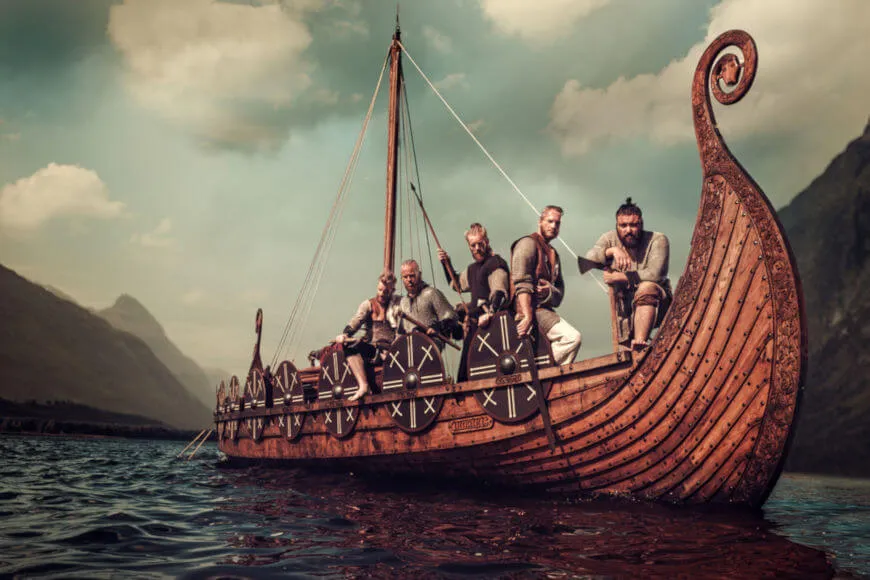
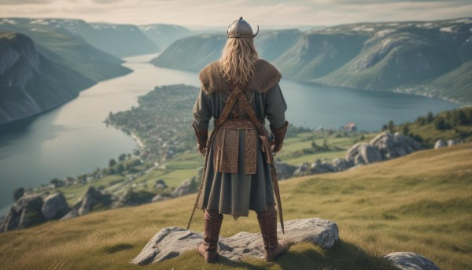
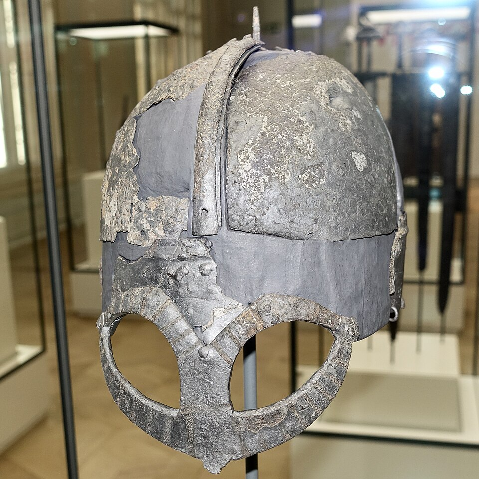
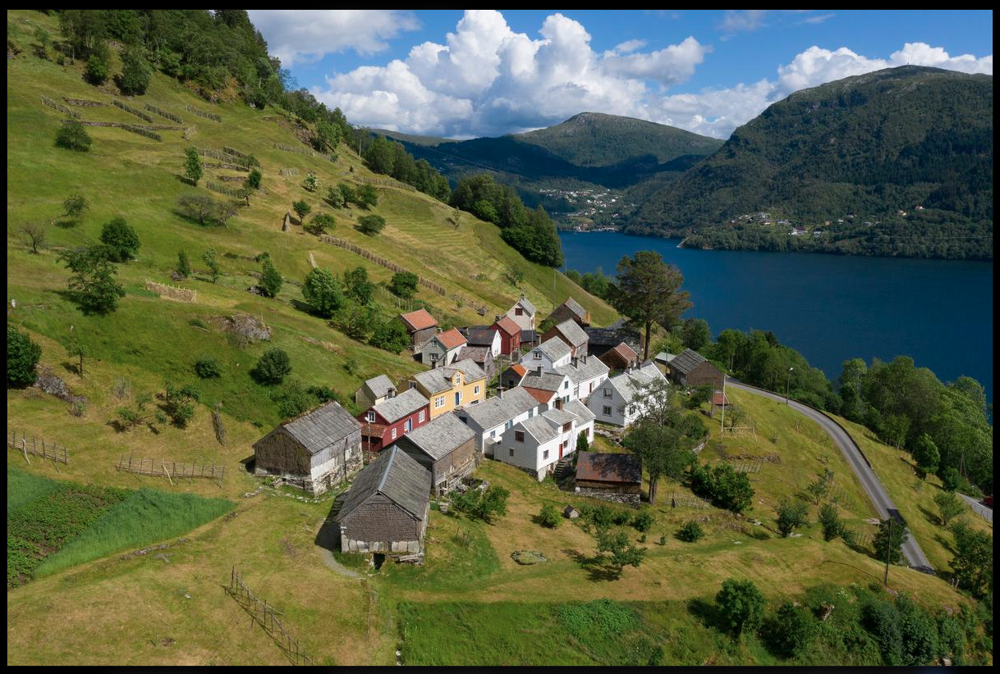

VIKINGS
Navegadores, guerreiros e exploradores que marcaram a história da Noruega. Os Vikings percorreram grandes distâncias, estabeleceram rotas comerciais e deixaram um legado que ainda desperta curiosidade nos dias de hoje.

Uma jornada pela história
Conheça alguns dos principais momentos da Era Viking.
793
Início da Era Viking
O ataque ao mosteiro de Lindisfarne, na Inglaterra, tornou-se um marco tradicional do início da Era Viking.
Séculos VIII–XI
Expansão pelo mundo
Os Vikings exploraram regiões da Europa, estabeleceram rotas comerciais e chegaram à Islândia, Groenlândia e América do Norte.
Século XI
Transformações e legado
A cristianização e o fortalecimento dos reinos escandinavos contribuíram para o declínio gradual das expedições vikings.

História
Os Vikings surgiram na Escandinávia por volta do século VIII e se destacaram por suas navegações, comércio e conquistas. Eles viajaram por diferentes regiões da Europa, chegando até a América do Norte, e deixaram um impacto importante na história.
Cultura
A cultura viking era rica em costumes e crenças. Sua sociedade possuía forte ligação com a natureza e com os deuses da mitologia nórdica, como Odin e Thor. Também se destacavam pelo artesanato, comércio e construção de embarcações, como os famosos drakkars.


Legado
O legado dos Vikings ainda pode ser percebido na cultura escandinava, em nomes de lugares, tradições e descobertas históricas. Suas viagens e explorações continuam despertando o interesse de pesquisadores e inspirando livros, filmes e produções culturais.
Os Vikings não apenas exploraram o mundo, eles também deixaram sua marca na história.